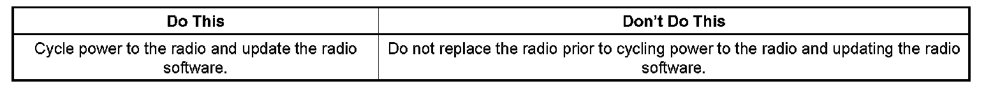
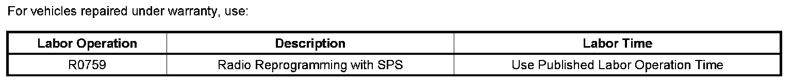

Navigation Radio Won't Accept/Play/Eject CD's
TECHNICALBulletin No.: 08-08-44-021B
Date: September 17, 2008
Subject:
Navigation Radio Will Not Accept, Eject Or Play CDs Or DVDs (Cycle Power to Radio and Update Radio Software)
Models:
2007-2009 Cadillac Escalade Models
with Super Navigation Radio (RPO U3R)
Supercede:
This bulletin is being revised to add the 2009 model year. Please discard Corporate Bulletin Number 08-08-44-021A (Section 08 - Body & Accessories).
Condition
Some customers may comment that the Navigation Radio will not accept, eject or play CDs or DVDs. The CD mechanism may appear to be locked and will not respond to button commands. Other radio functions including AM, FM, XM and the Navigation system will continue to operate.
Cause
This condition may be caused by a software anomaly that may cause the CD mechanism to stop working if the vehicle battery had a low state of charge and the customer attempted to start the vehicle. The customer may also have mentioned that this condition started after they experienced a dead battery.
Correction

If you experience this condition, do not replace the radio assembly. To repair this condition, use the following procedure:
1. Remove the RDO 15 amp fuse from the Underhood Fuse Box for 10 minutes and reinstall.
2. Update the radio with the latest software available on TIS2WEB.
Important:
If the condition returns after the latest calibration has been programmed into the radio or the vehicle was produced after March 1, 2008, the radio will have to be replaced.
Warranty Information

For vehicles repaired under warranty, use the table.

Disclaimer